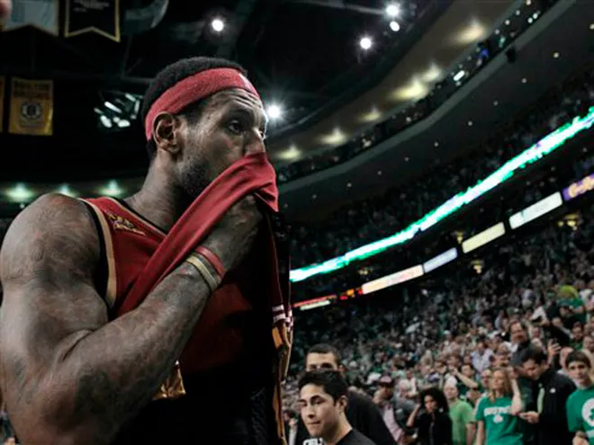
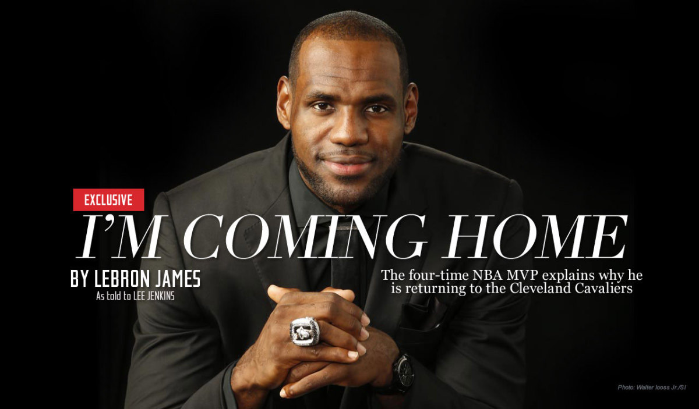

Lebron James In Cleveland
Lebron Contemplates his Future in Cleveland
The 2009-2010 Cleveland Cavaliers had an astonishing 61-21 record, but fell short of their championship dreams in the conference semi-finals to the Boston Celtics. Lebron James won the MVP award for the second straight year as a Cleveland Cavalier. After 7 years, Cleveland finally looked like they were going to get their long awaited championship. However, after 7 years of falling short of a Championship, Lebron decided to dramatically leave Cleveland for Miami while televising it on national TV. This did not sit well with Cleveland fans as some were seen burning his Jersey's and rebuking all that he had done for Cleveland.
Leaving Video Cleveland Reaction VideoLebron Successful in Miami
2010-2014 In Miami
During his four-year tenure in Miami, LeBron James led the Heat to four consecutive NBA Finals appearances from 2011 to 2014, winning back-to-back championships in 2012 and 2013. His time in Miami was marked by exceptional performances, showcasing his incredible scoring ability, basketball IQ, and versatility on both ends of the floor. LeBron's stint in Miami solidified his status as one of the game's all-time greats, and he earned two NBA Finals MVP awards during his time with the Heat. He also received numerous All-Star selections and All-NBA Team honors, continuing to dominate the league during his Miami years.
First Ring Video Second Ring VideoLebron Announces His Return To Cleveland
Clevelands First Ring Since 1964
On July 11, 2014, four years after taking his talents to South Beach, LeBron James ultimately decided he had unfinished business in Cleveland and returned to his original team via free agency James' announcement ended weeks of speculation about his future with teams across the league waiting on his move."When I left Cleveland, I was on a mission," James said in am essay written for Sports Illustrated. "I was seeking championships, and we won two. But Miami already knew that feeling. Our city hasn't had that feeling in a long, long, long time. My goal is still to win as many titles as possible, no question. But what's most important for me is bringing one trophy back to Northeast Ohio."
Coming Home Video2016 Cleveland Cavaliers First Championship Since 1964
Greatest Comeback in NBA Finals History
Two years after returning to Cleveland, Lebron James found himself down 3-1 against the Golden State Warriors who were on the verge of becoming a dynastyfulfilled his goal when he led the Cavaliers past the Golden State Warriors in the 2016 NBA Finals, ending a 52-year major sports championship drought in Cleveland. "CLEVELAND! This is for you!" James bellowed in his postgame interview before being announced as Finals MVP.
Cleveland Championship Video Lebron Interview